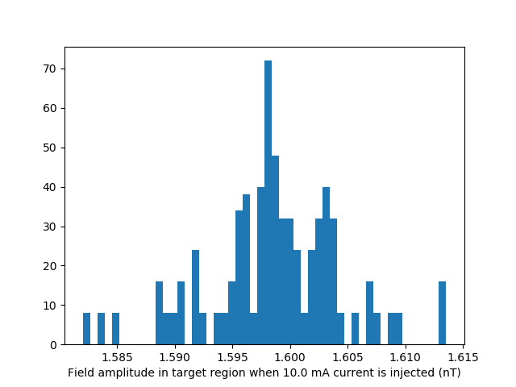
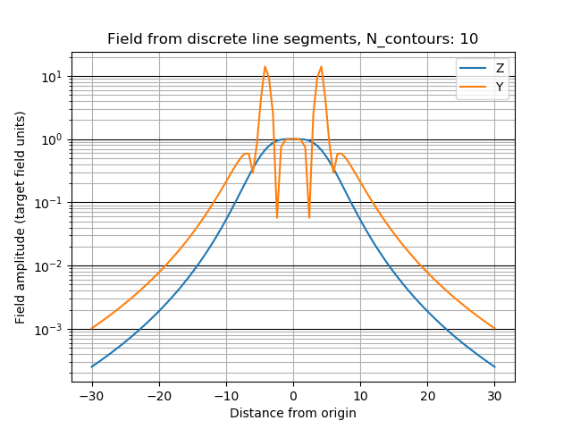

Note
Click here to download the full example code
Biplanar coil design¶
Example showing a basic biplanar coil producing homogeneous field in a target region between the two coil planes.
import numpy as np
import matplotlib.pyplot as plt
from mayavi import mlab
import trimesh
from bfieldtools.mesh_class import MeshWrapper
from bfieldtools.magnetic_field_mesh import compute_C
from bfieldtools.coil_optimize import optimize_streamfunctions
import pkg_resources
#Set unit, e.g. meter or millimeter.
# This doesn't matter, the problem is scale-invariant
scaling_factor = 1
#Load simple plane mesh that is centered on the origin
planemesh = trimesh.load(file_obj=pkg_resources.resource_filename('bfieldtools', 'example_meshes/10x10_plane_hires.obj'), process=False)
planemesh.apply_scale(scaling_factor)
#Specify coil plane geometry
center_offset = np.array([0, 0, 0]) * scaling_factor
standoff = np.array([0, 4, 0]) * scaling_factor
#Create coil plane pairs
coil_plus = trimesh.Trimesh(planemesh.vertices + center_offset + standoff,
planemesh.faces, process=False)
coil_minus = trimesh.Trimesh(planemesh.vertices + center_offset - standoff,
planemesh.faces, process=False)
joined_planes = coil_plus.union(coil_minus)
#Create mesh class object
coil = MeshWrapper(verts=joined_planes.vertices, tris=joined_planes.faces, fix_normals=True)
Set up target and stray field points
#Here, the target points are on a volumetric grid within a sphere
center = np.array([0, 0, 0]) * scaling_factor
sidelength = 2 * scaling_factor
n = 12
xx = np.linspace(-sidelength/2, sidelength/2, n)
yy = np.linspace(-sidelength/2, sidelength/2, n)
zz = np.linspace(-sidelength/2, sidelength/2, n)
X, Y, Z = np.meshgrid(xx, yy, zz, indexing='ij')
x = X.ravel()
y = Y.ravel()
z = Z.ravel()
target_points = np.array([x, y, z]).T
#Turn cube into sphere by rejecting points "in the corners"
target_points = target_points[np.linalg.norm(target_points, axis=1) < sidelength/2] + center
# #Here, the stray field points are on a spherical surface
stray_radius = 20 * scaling_factor
# stray_length = 20 * scaling_factor
#
# stray_points = cylinder_points(radius=stray_radius,
# length = stray_length,
# nlength = 5,
# nalpha = 30,
# orientation=np.array([1, 0, 0]))
#
stray_points_mesh = trimesh.creation.icosphere(subdivisions=4, radius=stray_radius)
stray_points = stray_points_mesh.vertices + center
n_stray_points = len(stray_points)
Compute C matrices that are used to compute the generated magnetic field
coil.C = compute_C(coil.mesh, target_points)
coil.strayC = compute_C(coil.mesh, stray_points)
Out:
Computing C matrix, 3184 vertices by 672 target points... took 1.04 seconds.
Computing C matrix, 3184 vertices by 2562 target points... took 2.47 seconds.
Create bfield specifications used when optimizing the coil geometry
#The absolute target field amplitude is not of importance,
# and it is scaled to match the C matrix in the optimization function
target_field = np.zeros(target_points.shape)
target_field[:, 0] = target_field[:, 0] + 1
target_spec = {'C':coil.C, 'rel_error':0.01, 'abs_error':0, 'target_field':target_field}
stray_spec = {'C':coil.strayC, 'abs_error':0.01, 'rel_error':0, 'target_field':np.zeros((n_stray_points, 3))}
Run QP solver
# The tolerance parameter will determine the spatial detail of the coil.
# Smaller tolerance means better but more intricate patterns. Too small values
# will not be solveable.
tolerance = 0.25
coil.I, coil.sol = optimize_streamfunctions(coil,
[target_spec, stray_spec],
laplacian_smooth=0,
tolerance=tolerance)
Out:
Computing inductance matrix in 7 chunks since 2 GiB memory is available...
Calculating potentials, chunk 1/7
Calculating potentials, chunk 2/7
Calculating potentials, chunk 3/7
Calculating potentials, chunk 4/7
Calculating potentials, chunk 5/7
Calculating potentials, chunk 6/7
Calculating potentials, chunk 7/7
Inductance matrix computation took 79.51 seconds.
Scaling matrices before optimization. This requires singular value computation, hold on.
Solving quadratic programming problem using cvxopt...
pcost dcost gap pres dres
0: 1.0500e+02 3.7757e+02 3e+04 5e+00 6e-14
1: 1.5336e+02 4.0199e+02 3e+03 6e-01 5e-14
2: 4.4248e+02 9.2422e+02 1e+03 1e-01 9e-14
3: 4.6255e+02 1.0365e+03 1e+03 1e-01 1e-13
4: 5.3592e+02 1.4638e+03 9e+02 8e-02 2e-13
5: 5.6696e+02 3.6612e+03 1e+03 8e-02 3e-13
6: 5.6809e+02 3.7241e+03 1e+03 8e-02 4e-13
7: 5.7281e+02 3.9155e+03 1e+03 8e-02 6e-13
8: 6.2388e+02 5.2786e+03 1e+03 8e-02 3e-12
Optimal solution found.
Plot coil windings and target points
f = mlab.figure(None, bgcolor=(1, 1, 1), fgcolor=(0.5, 0.5, 0.5),
size=(480, 480))
mlab.clf()
surface = mlab.pipeline.triangular_mesh_source(*coil.mesh.vertices.T, coil.mesh.faces,scalars=coil.I)
windings = mlab.pipeline.contour_surface(surface, contours=10)
B_target = coil.C.transpose([0, 2, 1]) @ coil.I
mlab.quiver3d(*target_points.T, *B_target.T)

Plot field falloff on two axes
plt.figure()
z1 = np.linspace(-30, 30, 101) * scaling_factor
x1 = y1 = np.zeros_like(z1)
line1_points = np.vstack((x1, y1, z1)).T
line1_C = compute_C(coil.mesh, r=line1_points)
B_line1 = line1_C.transpose([0, 2, 1]) @ coil.I
plt.semilogy(z1 / scaling_factor, np.linalg.norm(B_line1, axis=1)/np.mean(np.abs(target_field)), label='Z')
y2 = np.linspace(-30, 30, 101) * scaling_factor
z2 = x2 = np.zeros_like(y2)
line2_points = np.vstack((x2, y2, z2)).T
line2_C = compute_C(coil.mesh, r=line2_points)
B_line2 = line2_C.transpose([0, 2, 1]) @ coil.I
plt.semilogy(y2 / scaling_factor, np.linalg.norm(B_line2, axis=1)/np.mean(np.abs(target_field)), label='Y')
plt.ylabel('Field amplitude (target field units)')
plt.xlabel('Distance from origin')
plt.grid(True, which='minor', axis='y')
plt.grid(True, which='major', axis='y', color='k')
plt.grid(True, which='major', axis='x')
plt.legend()
plt.show()

Out:
Computing C matrix, 3184 vertices by 101 target points... took 0.20 seconds.
Computing C matrix, 3184 vertices by 101 target points... took 0.18 seconds.
/home/rzetter/Documents/bfieldtools/examples/biplanar_coil_design.py:178: UserWarning: Matplotlib is currently using agg, which is a non-GUI backend, so cannot show the figure.
plt.show()
Extract stream function isosurfaces/contours as polygons
scene = mlab.figure(None, bgcolor=(1, 1, 1), fgcolor=(0.5, 0.5, 0.5),
size=(480, 480))
mlab.clf()
surface = mlab.pipeline.triangular_mesh_source(*coil.mesh.vertices.T, coil.mesh.faces,scalars=coil.I)
#Compute contour values
n_contours = 10
#
# contours = []
#
# I_max = np.max(coil[stack].I)
# I_min = np.min(coil[stack].I)
# for contour_idx in range(1, n_contours+1):
# contours.append(I_min + (2 * contour_idx - 1) * (I_max - I_min) / (2 * n_contours))
#
windings = mlab.pipeline.contour_surface(surface, contours=n_contours)
scene.scene.isometric_view()
#Squeeze out the data from the contour plot. Ugly, I know.
c=windings.trait_get('contour')['contour'].get_output_dataset()
#points on the contour loops
points = c.points.to_array()
#contour line scalar value, sets current direction
scalars = c.point_data.scalars.to_array()
#Ugly, crappy structure containing continuous triangle edges for which
# the second edge in the triangle is the edge of a loop.
# These are not ordered in any sensible manner. Blergh.
lines = c.lines.to_array()
larr = np.asarray(lines).reshape([-1, 3])[:,1:]
#Start by finding the separate loops
loops = trimesh.graph.connected_components(larr)
n_loops = len(loops)
loop_polygons = []
#Now go through the edges in each loop, one by one
for loop_idx, loop in enumerate(loops):
loop_polygons.append([])
node_idx = loop[0] #Start with the first node we know is present in the loop
#Build a table of used nodes so we don't go around infinitely
node_used = [False]*len(points)
#Start looping
while node_idx < len(points):
if node_used[node_idx]:
# print('Encountered used node, stopping')
#Close loop by adding initial node
loop_polygons[loop_idx].append(node_idx)
break
else:
node_used[node_idx] = True
loop_polygons[loop_idx].append(node_idx)
#For which edge is our current node the FIRST node?
edge_idx = np.where(larr[:, 0] == node_idx)[0][0]
#Now take the SECOND node from that edge, that is our new current node
node_idx = larr[edge_idx, 1]
Compute magnetic field from discrete current line segments
Bseg_target = np.zeros(B_target.shape)
Bseg_line1 = np.zeros(B_line1.shape)
Bseg_line2 = np.zeros(B_line2.shape)
from bfieldtools.bfield_line import bfield_line_segments
for loop_idx in range(n_loops):
Bseg_target += bfield_line_segments(points[loop_polygons[loop_idx]],
target_points)
Bseg_line1 += bfield_line_segments(points[loop_polygons[loop_idx]],
np.array([x1, y1, z1]).T)
Bseg_line2 += bfield_line_segments(points[loop_polygons[loop_idx]],
np.array([x2, y2, z2]).T)
plt.figure()
I = 0.01
plt.hist(1e9 * np.linalg.norm(Bseg_target, axis=1)*0.01, 50)
plt.xlabel('Field amplitude in target region when %.1f mA current is injected (nT)' % (I*1e3))
plt.figure()
normalize_value = np.linalg.norm(Bseg_line1, axis=1)[np.where(z1==0)[0][0]]
plt.semilogy(z1 / scaling_factor, np.linalg.norm(Bseg_line1, axis=1)/normalize_value, label='Z')
normalize_value = np.linalg.norm(Bseg_line2, axis=1)[np.where(y2==0)[0][0]]
plt.semilogy(y2 / scaling_factor, np.linalg.norm(Bseg_line2, axis=1)/normalize_value, label='Y')
plt.ylabel('Field amplitude (target field units)')
plt.xlabel('Distance from origin')
plt.grid(True, which='minor', axis='y')
plt.grid(True, which='major', axis='y', color='k')
plt.grid(True, which='major', axis='x')
plt.title('Field from discrete line segments, N_contours: %d'%n_contours)
plt.legend()
- 
- 
Total running time of the script: ( 2 minutes 9.576 seconds)